<div class="content-warning"> <div>Content</div> <div>Advisory</div> <div>Whimsical Content</div> </div> <sub> The following deck - contains varying degrees of motion - is built with the web platform - may contain a slight dash of awesome ✨ </sub> --- <h2>Supercharge those Skills with Creative Coding <span class="lightning">⚡️</span> <span class="talk-take">Take III</span> </h2> <h5>Create your web platform showcase</h3> <h6 class="">Smashing Conf SF 2022</h4> --- <!-- .slide: class="multi-column" --> <div> I'm Jhey Tompkins DevRel Engineer @ <span class="googley">Google</span> <sub>I've always had a thing for bears... Supposedly</sub> </div> <img class="polaroid" src="../../assets/baby-photo--resized.jpeg" width="300" /> --- <div class="block-reveal"> # Here # we # gooooo! </div> --- <!-- .slide: data-background-iframe="/input-intro/basic/index.html" data-background-interactive --> --- <!-- .slide: data-background-iframe="/input-intro/accent-color/index.html" data-background-interactive --> --- <!-- .slide: data-background-iframe="/input-intro/changing-accent-color/index.html" data-background-interactive --> --- <!-- .slide: data-auto-animate data-background-iframe="/eq-range-inputs/index.html"--> <div class="fader-block" style="opacity: 1;"> <del data-id="cross">Creative over function</del> <h2>Expression through the "Impractically Practical"</h2> </div> --- ## You !== Me <h2> <span class="runway"> <span class="flight">✈️</span> </span> </h2> <sub>Let's not get personal, but, it is...</sub> --- - Supercharge your learning <span class="lightning">⚡️</span> - Go beyond the docs <span class="rocket">🚀</span> - Become a problem solver or a challenge crusher! <span class="muscle">💪</span> - Don't limit yourself with your tech stack! <span class="wag">☝️</span> --- ```zsh yarn add super-obscure-thing npm i awesome-library-with-slight-change-please yarn add this-but-for-react ``` <sub>Pssst. The web platform is awesome. Future proof yo'self!</sub> --- <!-- .slide: data-background-iframe="/perspective-steps/index.html" --> <h2 style="text-align: left; margin: 0 auto; width: 50%;"><span class="phone">📱</span></h2> --- <!-- .slide: class="puffer" style="top: 50% !important;" --> 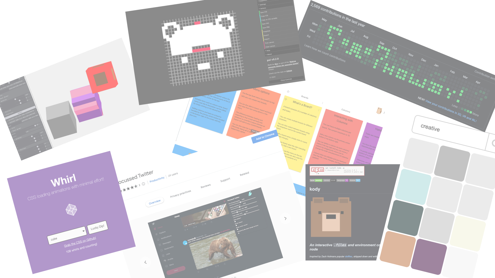 ## <span class="puff">🐡</span> Make for yourself. <sub>You're much more than a TODO app! 💅</sub> --- - BB8 Gyroscope 🕹 - Pinata ⭐️ - Pump up the Volume 💪 - CSS Bomb Defusal 🔥 - Infini-Phil 🤖 <sub>Remember `you !== me`? It's all about perspective</sub> <sub>The limit is __your__ `imagination` ✨</sub> --- <!-- .slide: class="multi-column" --> <div> ## Train It 👟 1. Start a list 📝 2. Document all the thingz!!11! ʕ·ᴥ· ʔ 3. No idea is a bad idea 4. __No idea is a bad idea__ </div> <img src="../../assets/notebook.jpeg" width="300"> --- <!-- .slide: class="multi-col" --> - CodePen ✨ - TV 📺 - Outside 👀 (_I know_) - Books 📚 - Newsletters 📰 - Events 😉 - Film 🎬 - News 🗞 - Muzli ⚙️ - Seasonal 🎅🏻 - Dribbble 🎨 - Reddit 🧐 - Social Media 🤝 - etc. etc. 🚀 <sub>I can provide a story for the majority of my `1400+` CodePen demos</sub> --- ## ⏱ 5 minutes && 10 lifetimes --- <!-- .slide: data-auto-animate --> ## What? ➡️ How? ➡️ Why? --- <!-- .slide: data-auto-animate --> <!-- Can we back drop impossible bear smashing "Why?" out of the way? --> ## What? ➡️ How? ~~➡️ Why?~~ <sub>Banish the thought of "Why?"... in this context.</sub> --- <!-- .slide: data-auto-animate --> ## What? ➡️ ~~How?~~ ~~➡️ Why?~~ <sub>Don't dwell on "How?"</sub> --- <h1 data-splitting class="animated-title">Example Time!</h1> --- <!-- .slide: data-auto-animate --> # <span>CSS</span><span>, UI, && DevTools</span> --- <!-- .slide: data-auto-animate --> # <span>CSS</span><span style="opacity: 0.2;">, UI, && DevTools</span> --- ## @Property Primer 🙏 <sub>Close to my heart</sub> --- <!-- .slide: class="multi-column"--> <!-- Slide 3 --> ```css :root { --my-untyped-color: red; } .untyped { --my-untyped-color: url('bear.png'); background: var(--my-untyped-color); } @property --my-color { syntax: '<color>'; initial-value: red; inherits: false; } .typed { --my-color: url('bear.png'); background: var(--my-color); } ``` <iframe class="demo-embed" src="../demos/typestyle/index.html" ></iframe> --- <!-- .slide: data-auto-animate --> <!-- Slide 4 --> ## Type~~Script~~Style 👀 <sub>Context ➡️ Interpolation ➡️ Motion</sub> --- <!-- .slide: class="multi-column" --> <!-- Slide 7 --> ```css @property --wave { inherits: false; initial-value: 0%; syntax: '<percentage>'; } body { --half-wave: calc(var(--wave) * 0.5); background: linear-gradient( transparent 0 calc(35% + var(--half-wave)), var(--wave-four) calc(75% + var(--wave)) 100% ), var(--sand); animation: waves 5s infinite ease-in-out; } @keyframes waves { 50% { --wave: 25%; } } ``` <iframe class="demo-embed" src="../demos/waves/index.html" ></iframe> --- <!-- .slide: class="multi-column" style="--split-one: 0.5fr; --split-two: 0.5fr;" --> ```css @property --nose { syntax: '<percentage>'; initial-value: 0%; inherits: false; } @property --tail { syntax: '<percentage>'; initial-value: 0%; inherits: false; } .loader { mask: conic-gradient( from 45deg, transparent 0 var(--tail), #000 0 var(--nose), transparent 0 var(--nose) ); animation: load 2.5s both infinite ease-in-out, spin 3.25s infinite linear; } @keyframes spin { to { transform: rotate(360deg); } } @keyframes load { 0% { --tail: 0%; --nose: 0%; } 40%, 60% { --nose: 100%; --tail: 0%; } 100% { --nose: 100%; --tail: 100%; } } ``` <iframe class="demo-embed" src="../demos/that-loader/index.html" ></iframe> --- <!-- .slide: class="multi-column" --> ```css .car { animation: journey 5s infinite linear; transform: translate( calc(var(--x) * 1vmin), calc(var(--y) * 1vmin) ) rotate(var(--r)); } @keyframes journey { 0% { --x: -22.5; --y: 0; --r: 0deg; } 10% { --r: 0deg; } 12.5% { --x: -22.5; --y: -22.5; } 15% { --r: 90deg; } 25% { --x: 0; --y: -22.5; } /* Obfuscated keyframes */ } ``` <iframe class="demo-embed" src="../demos/track-race/index.html" ></iframe> --- <!-- .slide: class="multi-column" --> ```css @property --count { inherits: false; initial-value: 0; syntax: '<integer>'; } .counter { counter-reset: count var(--count); animation: count 1s steps(100) infinite; } .counter:nth-of-type(2) { animation-duration: 5s; } .counter:after { font-variant: tabular-nums; content: counter(ms); } @keyframes count { to { --count: 100; } } ``` <iframe class="demo-embed" src="../demos/animating-numbers/index.html" ></iframe> <sub>Note the `tabular-nums` usage</sub> --- <!-- .slide: data-background-color="#ead9f2" data-background-iframe="/css-stopwatch/index.html" data-background-interactive --> --- <!-- .slide: class="table-shot" --> <!-- Try and limit each demo to 10 slides. That's a minute a slideish. --> <!-- Slide 1 --> <!-- |Source | What? | How? | |---|---|---| | Kent/Socials/Star Wars | :has exploration. | Tinker! | --> ## :has <sub>Absolute game changer! 💯</sub> --- <!-- Slide 2 --> <!-- <div class="collage-grid"> 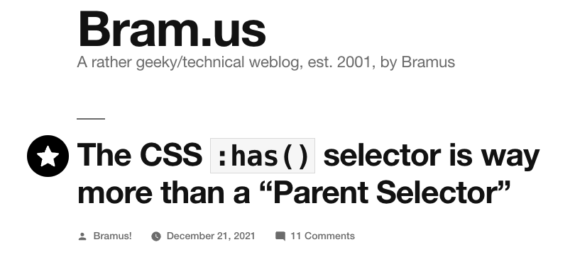 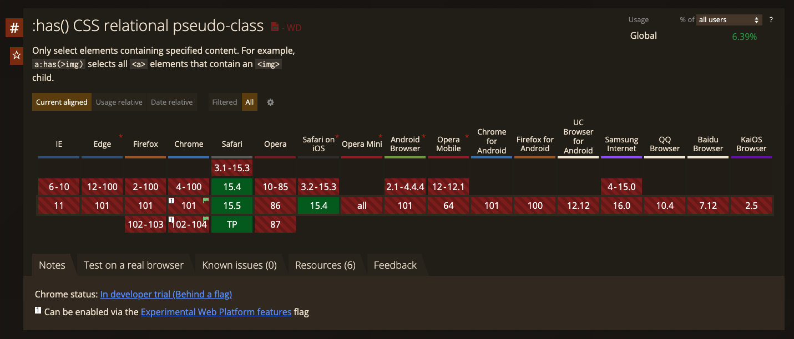 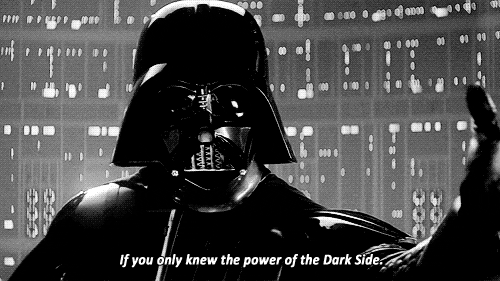 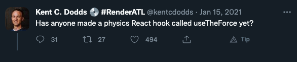 <img src="../../assets/devrel-grooving.gif" width="100" /> </div> --- --> ## Conditional environment selector <div style="display: grid; grid-template-columns: 1fr 1fr; grid-gap: 2vmin; margin-bottom: 2vmin;"> ```css .everyone:has(.a-good-time) { animation: party 21600s forwards; } .jeff:has(~ .aunt) { animation: go-see-her 10000s forwards; } ``` ```html <!-- Selected! ✅--> <div class="everybody"> <div class="body body--at-smashing-sf"> <div class="a-good-time"></div> </div> </div> <!-- Not Selected ❌--> <div class="everybody"></div> <!-- Selected! ✅--> <div class="jeff"></div> <div class="some-distance"></div> <div class="aunt"></div> ``` </div> <h4><strong>Not</strong> just a parent selector! <span class="wag">☝️</span></h4> --- ## Break the mental model ⬆️ <h4>Do a flip! <span class="skateboard-wrapper"><span class="skateboard">🛹</span></span></h4> --- <!-- .slide: class="shrink-code multi-column" --> <div class="code-column"> ```css .card { --card-border: var(--blue-2); display: grid; align-items: center; grid-gap: var(--size-2) 0; border-top: var(--size-2) solid var(--card-border); border-left: var(--size-2) solid var(--card-border); } ``` ```html <div class="card"> <h3 class="card__title">Awesome :has article</h3> <p class="card__blurb">Join me and the Chrome...</p> </div> ``` </div> <iframe class="demo-embed" src="../demos/has-media/index.html"></iframe> --- <!-- .slide: class="shrink-code multi-column" --> <div class="code-column"> ```css .card:has(img) { --card-border: var(--green-3); grid-template-columns: 1fr 1fr; padding: 0; grid-gap: 0; } .card:has(img) :is(.card__title, .card__blurb) { grid-column: 1; padding: var(--size-2) var(--size-4); } ``` ```html <div class="card"> <h3 class="card__title">Awesome :has article</h3> <p class="card__blurb">Join me and the Chrome...</p> <img class="card__media" src="https://asts/awe.png" /> </div> ``` </div> <iframe class="demo-embed" src="../demos/has-media-with-media/index.html"></iframe> --- <!-- .slide: class="shrink-code multi-column" --> <div class="code-column"> ```css .card:has(.card__featured) { --card-border: var(--red-3); animation: wiggle 6s infinite; } ``` ```html <div class="card"> <h3 class="card__title">Awesome :has article</h3> <p class="card__blurb">Join me and the Chrome...</p> <img class="card__media" src="https://asts/awe.png" /> <div class="card__featured"> <span>Featured</span> <svg viewBox="0 0 576 512" title="star"></svg> </div> </div> ``` <sub>You could even query media <code>src</code> type (.gif, etc.)</sub> </div> <iframe class="demo-embed" src="../demos/has-media-with-featured/index.html"></iframe> --- <!-- .slide: class="shrink-code multi-column" --> <div class="code-column"> ```css .form-group:has(:valid) { --color: var(--valid, green); } label { color: var(--color); } input { outline-color: var(--color); border-color: var(--color); } <!-- Two ways --> .form-group:has(:valid) ~ .form-group:has(:valid) ~ [type="submit"] { --color: var(--valid, green); } form:has(#email:valid):has(#password:valid) [type="submit"] { --color: var(--valid, green); } ``` ```html <form> <div class="form-group"> <label for="email">Email</label> <input required type="email" id="email" /> </div> <input type="submit" value="Submit"/> </form> ``` <sub>What about a "Compound" && selector?</sub> </div> <iframe class="demo-embed" src="../demos/has-forms-submit/index.html"></iframe> --- <!-- .slide: class="shrink-code multi-column" --> <!-- Forms and Labels? --> <div class="code-column"> ```css .form-group:has(:valid) { --color: var(--valid, green); } label { color: var(--color); } input { outline-color: var(--color); border-color: var(--color); } .form-group:has(:invalid:not(:focus)) label { animation: shake 0.5s infinite; } .form-group:has(:valid) label span { animation: twirl 1s calc(var(--index) * 0.1s); } ``` ```html <label for="formInput"> <span class="label__letter" style="--index: 0;">E</span> <span class="label__letter" style="--index: 1;">m</span> <span class="label__letter" style="--index: 2;">a</span> <span class="label__letter" style="--index: 3;">i</span> <span class="label__letter" style="--index: 4;">l</span> </label> ``` </div> <iframe class="demo-embed" src="../demos/has-forms-whimsical/index.html"></iframe> --- <!-- .slide: class="shrink-code multi-column" --> <!-- :hover to reveal elements across a screen. You don't need JS to do these things or "hacks" --> <div class="code-column"> ```css @property --inset-top { syntax: '<length-percentage>', inherits: true; initial-value: 0%; } :root:has(#bus:checked) { --inset-top: 58%; /* styles obfuscated */ } img { object-view-box: inset(var(--inset-top), ...); transition: --inset-top var(--zoom-speed); } ``` ```html <img alt="Zoomer" src="https://zoom.png"/> <div class="controls"> <fieldset> <legend>Zoom Spots</legend> <div class="controls__group"> <label for="bus">Bus</label> <input type="radio" id="bus" name="zoomies" /> </div> </fieldset> </div> ``` </div> <iframe class="demo-embed" src="../demos/has-primitive-zoom/index.html"></iframe> --- <h2 data-id="goodbye">Goodbye "Checkbox Hack"? 🥲</h2> <sub>Honestly. So many possibilities. Please try it out! 🙏</sub> --- #### Better Make some Games then... --- <!-- .slide: class="shrink-code multi-column" --> <!-- :hover to reveal elements across a screen. You don't need JS to do these things or "hacks" --> <div class="code-column"> ```css :is(.turn:has(:checked), .turn:first-of-type:has(:checked)) { z-index: -1; opacity: 0.2; } :is(.turn:has(:checked) + .turn:not(.turn:has(:checked))) { z-index: 2; opacity: 1; } ``` ```html <form> <div class="turn"> <label for="turn--0">0</label> <input type="checkbox" id="turn--0"/> </div> <div class="turn"> <label for="turn--1">1</label> <input type="checkbox" id="turn--1"/> </div> </form> ``` </div> <iframe class="demo-embed" src="../demos/has-mechanics/index.html"></iframe> --- <!-- .slide: class="shrink-code multi-column" --> <!-- :hover to reveal elements across a screen. You don't need JS to do these things or "hacks" --> <div class="code-column"> ```css /* show indicator */ .board:has(#x-0:checked) .board__cell:has([for="x-0"]) .board__x { display: block; } /* show controls with z-index flip */ [for*="x"] { z-index: calc(1 + var(--turn)); } /* calculate wins, sibling will remain prevalent */ :root:has(#o-2:checked ~ #o-4:checked ~ #o-6:checked) { --show-naught: 1; --show-draw: 0; } /* calculate turns */ .board:has(:checked ~ :checked ~ :checked) { --turn: 1; } ``` ```html <div class="board__cell"> <label for="x-0">...</label> <label for="o-0">...</label> <svg class="x board__x">...</svg> <svg class="o board__o">...</svg> </div> ``` <sub>You can't <code>:has(:has())</code>! But you can <code>:has():has()</code> duh 👀</sub> </div> <iframe class="demo-embed" src="../demos/has-tic-tac-toe/index.html"></iframe> --- ## Debrief 💫 <div class="col-count" style="column-count: 2;"> <div> ### Learned - Animated custom properties FTW! - What :has can do - Drawbacks of JavaScript timers - Bye "Checkbox Hack"? - More opportunites for less JavaScript - Mitigate user error w/ less classes - Cleaner markup? </div> <div> ### Next - Make it pretty? - More awesome? - 3D 🤯 - Pure CSS all the things? - This talk! </div> <div class="practical-post-it"> ### Practical Corner - Awesome use cases - Less HTML/CSS hacks! - Learn the specs - Many other things! </div> </div> --- --- <!-- .slide: data-background-iframe="/has-a-dark-side/index.html" --> --- #### In fact, you can learn a lot of CSS from making games... --- <img src="../../assets/devrel-head-smash.gif" width="400"/> --- <!-- .slide: data-background-iframe="/has-stan/index.html" --> --- ## @Stubbornella <sub>Cheers! 😅 (That + Finding out I'm last)</sub> --- <!-- .slide: data-background-iframe="/has-connections/index.html" --> --- <!-- .slide: data-background-iframe="/minecssweeper/index.html" --> --- <!-- .slide: data-auto-animate --> # <span style="opacity: 0.2;">CSS, </span><span style="opacity: 1;">UI<span style="opacity: 0.2;">, && DevTools</span> --- <!-- .slide: class="table-shot" --> <!-- Slide 1 --> |Source | What? | How? | |---|---|---| | Movies/LWJ/Illness 😅 | Voice-activated browser assistant | SpeechRecognition, SpeechSynthesis, 3D, Houdini, 🎉 | --- <div class="collage-grid capy-collage"> 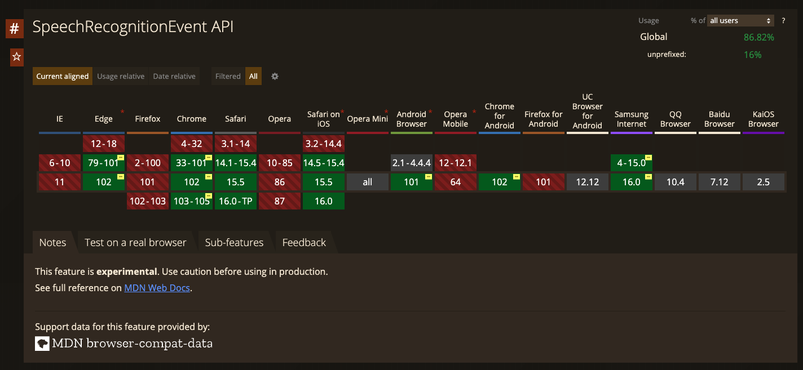 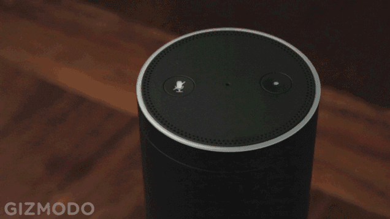 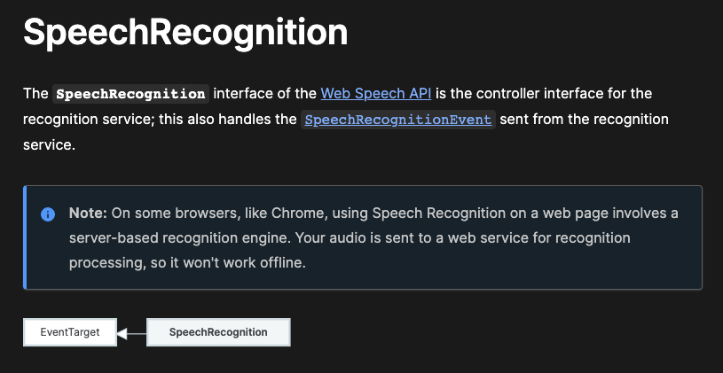 <img src="../../assets/kimi-peaking.gif" width="300"> </div> --- <!-- Slide 2 --> ## Where to begin? ```js window.SpeechRecognition = window.SpeechRecognition || window.webkitSpeechRecognition const BROTHER = new window.SpeechRecognition() const STATE = { RUNNING: false, } const START = () => { if (!STATE.RUNNING) { console.info("I'm listening 👀") STATE.RUNNING = true document.body.style.setProperty('--recording', 1) BROTHER.start() } } const PROCESS_AUDIO = e => { const TRANSCRIPT = e.results[e.results.length - 1][0].transcript .toLowerCase() .trim() document.querySelector('main').innerText = TRANSCRIPT } BROTHER.addEventListener('result', PROCESS_AUDIO) START() ``` <sub>We need to be online for Chrome services [server-based engine 🤖]</sub> --- <!-- .slide: data-background-iframe="/speechrecognition-basics/index.html" --> --- <!-- Slide 3 --> ## Yeah, but, how do I snoop? ```js const BROTHER = new window.SpeechRecognition() BROTHER.continuous = true BROTHER.lang = 'en-US' BROTHER.interimResults = true ``` --- <!-- .slide: data-background-iframe="/speechrecognition-continuous/index.html" --> --- <!-- Slide 4 --> ## TEARDOWN && BUILD UP ```js // Start a new "processor" let BROTHER const genProcessor = (interim) => { BROTHER = new window.SpeechRecognition() BROTHER.continuous = true BROTHER.interimResults = interim BROTHER.addEventListener('start', INDICATE_START) BROTHER.addEventListener('result', PROCESS_AUDIO) BROTHER.start() } // When we want to change something, tear it down and start fresh BUTTON.addEventListener('click', () => { const PRESSED = BUTTON.matches('[aria-pressed="false"]') ? true : false if (BROTHER) { BROTHER.stop() BROTHER.removeEventListener('start', INDICATE_START) BROTHER.removeEventListener('result', PROCESS_AUDIO) } BUTTON.setAttribute('aria-pressed', PRESSED) genProcessor(PRESSED) }) ``` --- ## What If I want to turn it off? ```js const ON_END = () => { // We may have ended on an error or unintentionally if (STATE.RUNNING && BROTHER) BROTHER.start() } const CLEAN_UP = () => { BROTHER.stop() BROTHER.removeEventListener('start', INDICATE_START) BROTHER.removeEventListener('result', PROCESS_AUDIO) BROTHER.removeEventListener('end', ON_END) } MUTE_TOGGLE.addEventListener('click', () => { const PRESSED = MUTE_TOGGLE.matches('[aria-pressed="false"]') ? true : false if (BROTHER && PRESSED) { STATE.RUNNING = false CLEAN_UP() document.documentElement.style.setProperty('--recording', 0) } else genProcessor() MUTE_TOGGLE.setAttribute('aria-pressed', PRESSED) }) ``` --- <!-- .slide: data-background-iframe="/speechrecognition-stop-start/index.html" --> --- ## That's great... But what about the good stuff? ```js let deactiveTimer const TIMER = 5000 const KEY_PHRASE = "Hey Bristol" const DEACTIVATE = () => { STATE.ACTIVE = false } const PHRASES = { LIGHTS: 'turn the lights', } const ACTIONS = [ { phrase: PHRASES.LIGHTS, action: transcript => { const STATE_TRANSCRIPT = transcript.slice(transcript.indexOf(PHRASES.LIGHTS) + PHRASES.LIGHTS.length).trim() if (STATE_TRANSCRIPT.startsWith('on')) document.documentElement.className = 'lights-on' if (STATE_TRANSCRIPT.startsWith('off')) document.documentElement.className = 'lights-off' } }, ] ``` --- ## Processing 🤖 ```js const PROCESS_AUDIO = e => { const TRANSCRIPT = e.results[e.results.length - 1][0].transcript.toLowerCase().trim() const IS_FINAL = e.results[e.results.length - 1].isFinal // Active so check for action if (STATE.ACTIVE && IS_FINAL) { for (const ACTION of ACTIONS) { if (TRANSCRIPT.indexOf(ACTION.phrase.toLowerCase()) !== -1) ACTION.action(TRANSCRIPT) } // Active but not final keeps the state alive with interim } else if (STATE.ACTIVE && !IS_FINAL) { clearTimeout(deactivateTimer) deactivateTimer = setTimeout(DEACTIVATE, TIMER) // Check for activation } else if (TRANSCRIPT === KEY_PHRASE) { STATE.ACTIVE = true deactivateTimer = setTimeout(DEACTIVATE, TIMER) } } ``` --- <!-- .slide: data-background-iframe="/speechrecognition-trigger-words/index.html" --> --- ## Where's the feedback? ```js const { speechSynthesis: synth, } = window const speak = text => { if (synth.speaking) synth.cancel() const utter = new SpeechSynthesisUtterance(text) utter.voice = synth.getVoices()[0] synth.speak(utter) } // Whack in a String speak('Milk was a bad choice...') ``` <sub>Please leave your feedback slips on the way out... 🙏</sub> --- <!-- .slide: data-background-iframe="/speechsynthesis-basics/index.html" --> --- <!-- .slide: data-background-iframe="/speechsynthesis-options/index.html" --> --- <!-- .slide: data-background-iframe="/speechrecognition-functional/index.html" --> --- <!-- Slide 13 --> ## Debrief 💫 <div class="col-count" style="column-count: 2;"> <div> ### Learned - SpeechSynthesis - SpeechRecognition - String manipulation - CSS Custom Properties - Keeping things DRY </div> <div> ### Next - More commands - 3D 😎 - Whimsy? - What else could we do with it? - APIs? - Sat Nav for your site? </div> <div class="practical-post-it"> ### Practical Corner - Voice activated controls - Provide user feedback - Audio assistance </div> </div> --- <!-- .slide: data-background-iframe="/hey-phil/index.html" --> --- <!-- .slide: data-auto-animate --> # <span style="opacity: 0.2;">CSS, UI, && </span><span style="opacity: 1;">DevTools</span> --- <!-- .slide: class="table-shot" --> <!-- Slide 1 --> |Source | What? | How? | |---|---|---| | Harry Spotter 😅/Old hobby resurgence | Hadoukener!!! | DeviceOrientation, DeviceMotion, DeviceOrientation Simulator, USB Debugging 👀 | --- <!-- Slide 2 --> <div class="collage-grid safe-collage"> 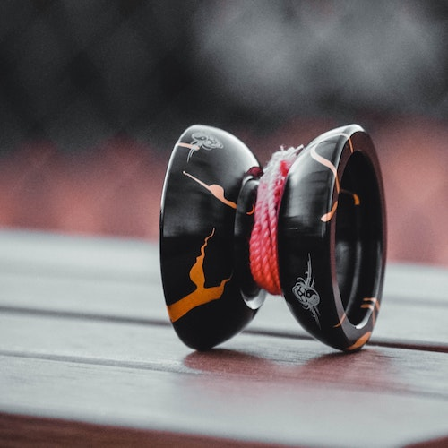 <img src="../../assets/sensors.png" width="300"> 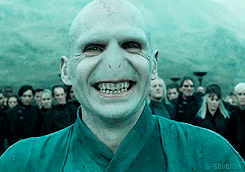 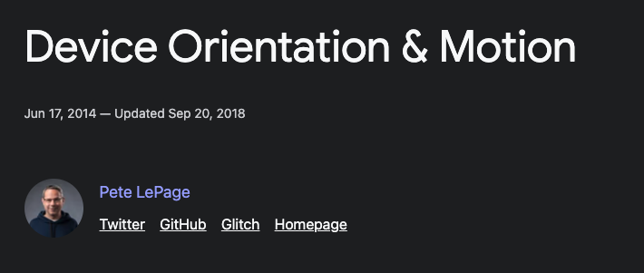 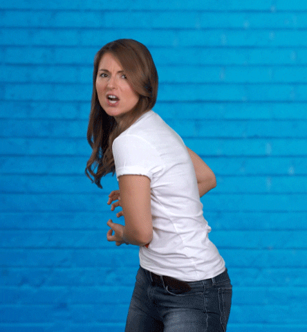 </div> --- <!-- Slide 3 --> <img src="../../assets/petes-diagram.png" width="300" /> --- <!-- Slide 4 --> ```js // Given two ranges, return a function to map a value const mapRange = (inputLower, inputUpper, outputLower, outputUpper) => { const INPUT_RANGE = inputUpper - inputLower const OUTPUT_RANGE = outputUpper - outputLower return value => outputLower + ( ((value - inputLower) / INPUT_RANGE) * OUTPUT_RANGE || 0 ) } // Z-axis (0deg - 360deg) const ALPHA_MAPPER = mapRange(0, 360, 0, 100) // X-axis (-180deg - 180deg) const BETA_MAPPER = mapRange(-180, 180, 0, 100) // Y-axis (-90deg - 90deg) const GAMMA_MAPPER = mapRange(-90, 90, 0, 100) ``` --- <!-- Slide 5 --> ```js const ALPHA = document.querySelector('#alpha') const BETA = document.querySelector('#beta') const GAMMA = document.querySelector('#gamma') const handleOrientation = ({ alpha, beta, gamma }) => { ALPHA.value = ALPHA_MAPPER(alpha) BETA.value = BETA_MAPPER(beta) GAMMA.value = GAMMA_MAPPER(gamma) } window.addEventListener('deviceorientation', handleOrientation) ``` --- <!-- .slide: data-background-iframe="/cube-mapping/index.html" --> <a class="demo-link" href="../demos/cube-mapping/index.html" target="_blank">Check the demo out!</a> --- <!-- .slide: data-background-iframe="/deviceorientation-safe/index.html" --> <a class="demo-link" href="../demos/deviceorientation-safe/index.html" target="_blank">Check the demo out!</a> --- ### web.dev/generic-sensor - Accelerometer - Gyroscope - LinearAccelerationSensor - AbsoluteOrientationSensor - RelativeOrientationSensor - GravitySensor --- ## Enter USB Debugging 🐞 --- ## <a href="../demos/accelerometer-demo/index.html" target="_blank">Accelerometer Demo</a> ```js const ACCEL = new Accelerometer({ frequency: 10 }) navigator.permissions.query({ name: 'accelerometer' }) .then(permission => { if (permission.state === 'granted') ACCEL.addEventListener('reading', handleForce) }) ``` --- ## <a href="../demos/devicemotion-basics/index.html" target="_blank">DeviceMotion Dip</a> ```js const handleMotion = ({ acceleration: { x, y, z }}) => {...} const handleOrientation = ({ alpha, beta, gamma }) => {...} Promise.all([ DeviceOrientationEvent.requestPermission(), DeviceMotionEvent.requestPermission(), ]).then(results => { if (results.every(result => result === 'granted')) { window.addEventListener('deviceorientation', handleOrientation) window.addEventListener('devicemotion', handleMotion, true) } }) ``` --- <!-- .slide: style="--code-size: 0.9m;" --> ## <a href="../demos/devicemotion-full-picture/index.html" target="_blank">DeviceMotion Full Picture</a> ```js[3] const handleMotion = ({ acceleration: { x, y, z }, rotationRate: { alpha, beta, gamma }} ) => {...} ``` <sub>Give it a flick!</sub> --- ## <a href="../demos/harry/index.html" target="_blank">Harry Spotter and the Half Rep Prince?</a> --- ## <a href="../demos/rage/index.html" target="_blank">A lil Nostalgia?</a> --- <!-- Slide 14 --> ## Debrief 💫 <div class="col-count" style="column-count: 2;"> <div> ### Learned - DeviceOrientation Event - DeviceMotion Event - Sensor types </div> <div> ### Next - More sounds - PWA - Whimsy? - Web Vibration API (Yep, that's a thing!) </div> <div class="practical-post-it"> ### Practical Corner - Make cool interactions! - Gesture based device actions - Shake to bake! (Not wake) </div> </div> --- ## <a href="../demos/toy-phil/index.html" target="_blank">What happened to that hobby?</a> --- # That's It! <span class="raise-hands">🙌</span> <sub>Almost...</sub> --- 1. Explore 🧐 2. Hoard 📝 3. Inspire 💡 4. Make 🤓 5. Profit 💰 <sub>Curiosity may have killed the cat, but it built the bear ʕง•ᴥ•ʔง</sub> --- ## What if you combined speech and motion? C'mon Harry! --- ## What next? 🤔 <del>"Homework"</del> <sub style="display: block;">Psssst, it's just pixels...</sub> --- <!-- .slide: data-background-iframe="/hey-phil/index.html" --> --- # Thank you! <div class="perspective"><span class="pray-hands">🙏</span></div> <sub>Grab me `@jh3yy` || `jhey.dev/links`</sub>